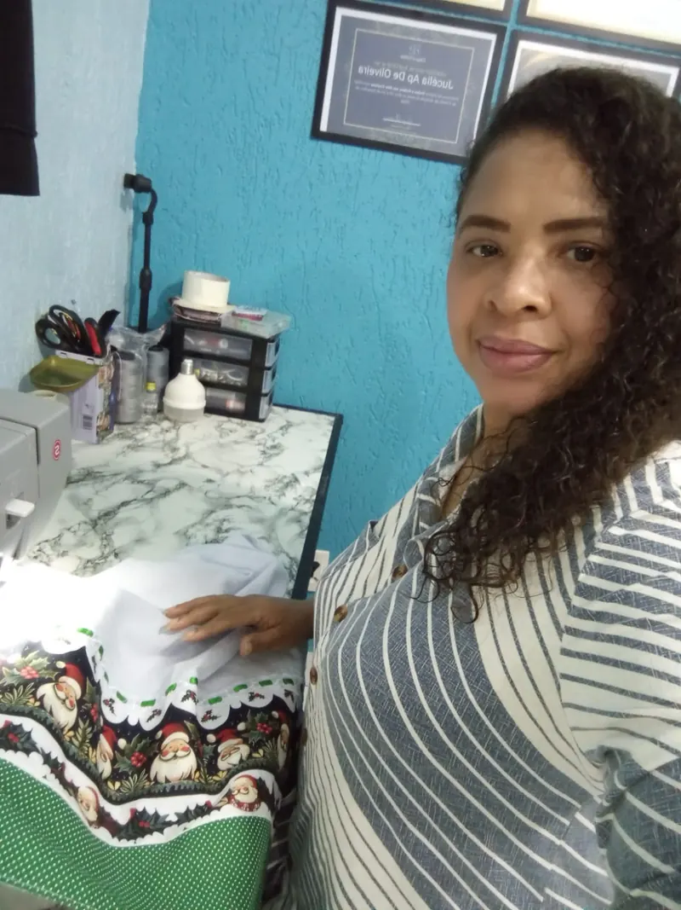
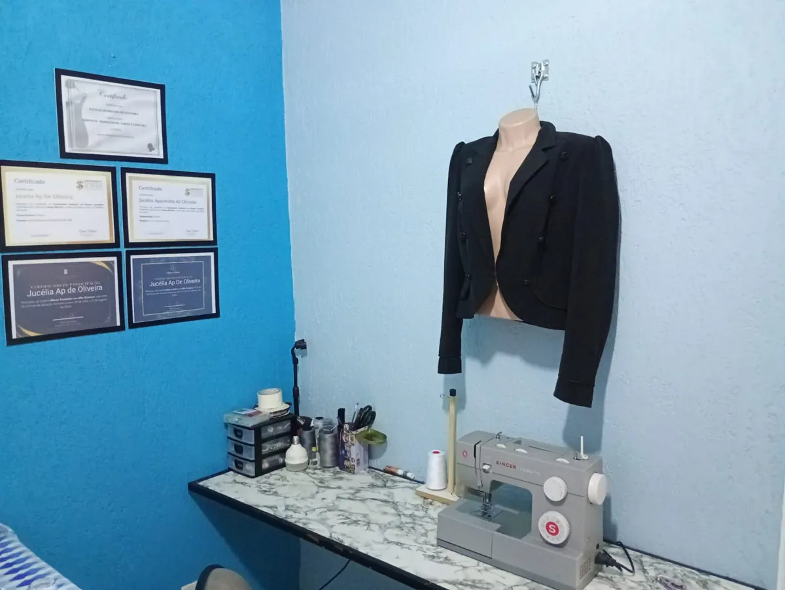

01
Troca de Zíper
Zíper invisível, comum ou reforçado em calças, saias, vestidos, jaquetas e casacos. Aplicação firme e acabamento discreto.
Ateliê de costura · Jucélia Oliveira
Costura artesanal com acabamento de ateliê. A Tia Ju conserta e ajusta suas peças com o cuidado de quem conhece cada ponto — para a sua roupa vestir do jeito certo.
Serviços
Do pequeno reparo à reforma completa: cada serviço é feito à mão, com prova e acabamento conferido antes da entrega.
Zíper invisível, comum ou reforçado em calças, saias, vestidos, jaquetas e casacos. Aplicação firme e acabamento discreto.
Barra original (mantendo o acabamento de fábrica do jeans), simples ou de lenço — no comprimento exato para o seu sapato.
Apertar ou soltar cintura, laterais e pences para a peça acompanhar o seu corpo — sem perder o desenho original.
Forro novo para jaquetas e casacos, inclusive acolchoados e de pelúcia, devolvendo conforto e vida à peça.
Rasgos, costuras abertas, botões, bolsos e reformas completas. Aquela peça parada no armário volta a ser usada.
Blazers, paletós e casacos estruturados ajustados em mangas, ombros, laterais e comprimento — preservando o acabamento original.
Portfólio
Alguns trabalhos saídos do ateliê. Toque em uma foto para ampliar.
Como funciona
Etapa 1 de 3
Mande uma mensagem com fotos e conte o que precisa. Combinamos o melhor horário para você trazer a peça e fazer a prova.
Etapa 2 de 3
Na prova, cada detalhe é marcado no corpo: comprimento, cintura, caimento. Nada é feito no achismo — o resultado é a sua medida.
Etapa 3 de 3
Sua peça volta conferida, com acabamento caprichado e pronta para usar. É só vestir e sair.


Sobre
No ateliê montado em casa — entre a máquina de costura, o manequim e os certificados na parede — a Jucélia transforma roupas que não serviam mais em peças que vestem bem.
Cada ajuste é feito com calma, prova e atenção ao detalhe: o carinho do trabalho artesanal com o rigor técnico da alta costura.
Agendar / Contato
Envie uma foto da peça e conte o que precisa. A resposta é rápida e o orçamento, sem compromisso.